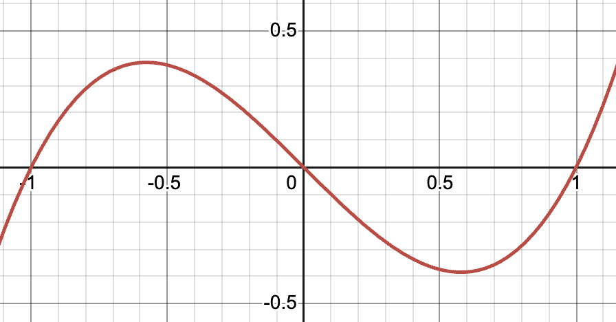
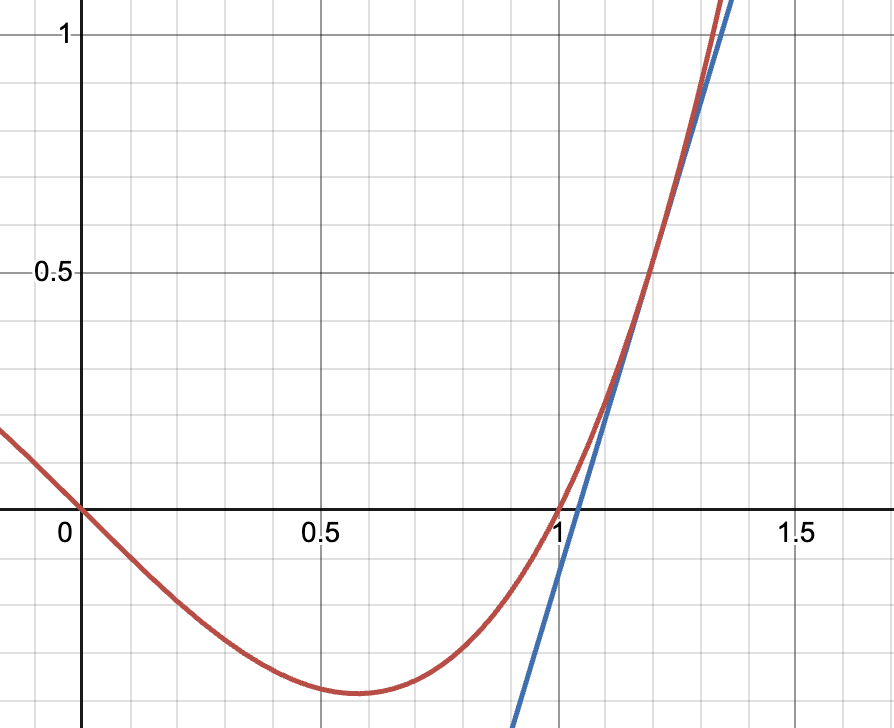
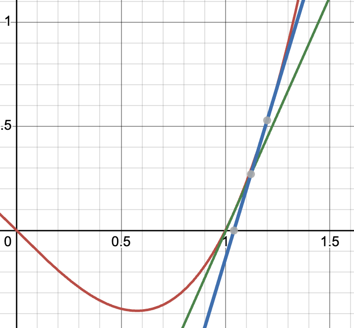

4 C言語の復習 3
4.1 前回演習の解答
- 受講上の注意【再掲】
- インデントを揃える
- 配列の初期化（追記）
4.2 本日のメニュー
- 繰り返しの中断 break, continue
- 関数
- 二分法
- ニュートン法
4.3 繰り返しを中断する
switch文の説明で既に登場しているが，breakを使うと，直近の繰り返し文を中断して抜けることができる． do while文の例文で学習した入力された整数を返す繰り返し文は，次のようにbreakを用いて書き改めることができる．
while (1) { // 条件式は常に真なので無限ループ
printf("整数を入力: ");
scanf("%d", &a);
printf("--> 入力された数: %d\n", a);
printf("終了する場合は 0 を入力: ");
scanf("%d", &a);
if ( a == 0 ) {
break; // while文を抜ける
}
};たとえば配列の要素を順番に確認して，目的のものが見つかった時点でループを終了する場合に使う． 以下は，テストの点数配列scoreをチェックして100点の人がいる場合は特定の文字列を出力するプログラムである．
int student_num = 10;
int score[] = {99, 80, 75, 66, 50, 87, 33, 89, 99, 100};
for (int i = 0; i < student_num; i++){
if (score[i] == 100){
printf("100点満点の人が存在します\n");
break;
}
}似たような働きをする文に，continueがある．これは，ループの以後の文をスキップして次のループに移動する． 以下は，50点未満の人を除いて得点を出力するプログラムである．
4.4 関数
繰り返し同じ処理をする場合は，関数としてまとめて使い回すと効率が良いし，プログラムが読みやすくなる． 関数とは，渡された値（引数）を処理して何らかの値を返す（戻り値）ものであり，main関数やその他の関数から呼び出されたタイミングで実行される． 関数は以下のような構造で記述する．
3つの整数を受け取って，最大値を返す関数max3を書いてみよう．
int max3(int a1, int a2, int a3)
{
int max = a1;
if (a2 > max) {
max = a2;
}
if (a3 > max) {
max = a3;
}
return max;
}1行目より，これはint型のデータを返す関数で，関数名はmax3，引数はint型のa1およびa2, a3であることがわかる． ブロック{}内には関数で行う処理の本体が書かれている． a1, a2, a3のうち最大のものがmaxに代入されるようになっており，最後にmaxをreturnで戻り値に設定している． 引数のa1, a2, a3は，関数本体内で宣言せずに使用していることに注意． これは，1行目の関数宣言時にデータ型と変数名が確定しているため． 一方，maxは関数内で新たに定義する変数なので{}内でint変数として宣言している．
関数の呼び出しは，以下のように書く．
#include <stdio.h>
int max3(int a1, int a2, int a3) {
int max = a1;
if (a2 > max) {
max = a2;
}
if (a3 > max) {
max = a3;
}
return max;
}
int main(void)
{
int a, b, c;
int max;
printf("整数を3つ入力: ");
scanf("%d%d%d", &a, &b, &c);
max = max3(a, b, c);
printf("最大値は%d\n", max);
return 0;
}条件演算子を用いた式「式1 ? 式2 : 式3」は，式1が真ならば式2を評価した結果を，式2が偽ならば式3を評価した結果を返す．これを用いると2値a1, a2の大きい方をmaxに代入する文はmax = (a1 > a2) ? a1 : a2;と書ける．3値の最大値も同様にコンパクトに書けるが多少わかりにくい: max = (a1 > a2) ? ((a1 > a3) ? a1 : a3) : ((a2 > a3) ? a2 : a3);
関数max3はmainより前に記述されているが，Cプログラム実行時に最初に実行されるのはmain関数であるという決まりがあるので，まず，mainの1行目が実行される． 整数を3つ入力した後，main関数の5行目でmax3が呼び出される． ここで，main関数内での引数の変数名a, b, cと，関数max3の引数名a1, a2, a3は一致していなくてもよい（一致していてもよい）． 関数max3の呼び出し時に，
という代入が行われると理解しよう．当然，関数max3内でa1の値が書き換えられたとしても，max3を呼び出した元の関数のaは影響を受けない．このように関数の引数は呼び出し元とは別の変数であり，値が代入されることを値渡しという．
max3の戻り値は，main関数内で宣言されたmaxという変数に代入される． ここで，main関数における変数maxと，max3関数内で宣言された変数maxは別物であることに注意． 変数は宣言されたブロック内に限り有効である．このような，変数の有効範囲をスコープと呼ぶ．
どのブロック内でもない場所で宣言された変数は，ファイル内全体で有効である． 同じ名前の変数が複数有効な場合，よりそのブロックに近い変数を指す．
上のプログラムでは，main関数内では4行目で初期化されたx = 2が有効となる．
関数には，戻り値が不要なものや引数が不要なものがある．その場合は，データ型のところにvoidと書く． 以下は，特定の文字列を出力する処理を関数として独立させたものである．
void put_mytext(void){
printf("これは関数内の処理です\n");
}
int main (void)
{
int num;
printf("何回書きますか？: ");
scanf("%d", &num);
for (int i = 0; i < num; i++){
put_mytext();
}
return 0;
}main関数の5行目で関数put_mytextが呼び出されているが，引数として何も渡していないので()となっている． また，戻り値も無いのでput_mytextにはreturn文が無い．
4.5 方程式の数値解法
方程式\(f(x) = 0\), \(x \in [\underline{x}, \bar{x}]\)を数値的に解く方法を考えよう．ここで，「数値的に」とは，\(f(x)=0\)を式変形して\(x = \alpha\)として\(\alpha\)を求める方法ではなく，\(x\)に具体的な数字を代入して計算することによって解\(\alpha\)を求めることを意味する．

たとえば\([\underline{x}, \bar{x}] = [-1, 1]\)として，上図のような関数\(f(x)\)がプロットできる場合は，\(x = -1, 0, 1\)付近が解であることがわかるが，その厳密な値はグラフからはわからない．また，\(f(x)\)が複雑でグラフを描いても解が読み取れない，そもそもプロットできない場合を想定するとよい．
4.5.1 二分法
探索範囲を2分割して絞り込む方法である． アルゴリズムへの入力として，解を挟む閉区間\([a, b]\)と，解の許容誤差\(\epsilon\)を与えておく． \(a\)と\(b\)の中点を新たに\(c\)として，\(f(c)\)の正負によって探索範囲を\([a, c]\)か\([c, b]\)に絞る．探索範囲の幅が\(\epsilon\)より小さくなった時点で探索を終了する．
探索範囲を\([a, b]\)の内点に限定してよい理由は，中間値の定理より: \(f(x)\)が閉区間\([a, b]\)上で連続であり，\(f(a)\neq f(b)\)ならば，\(f(a)\)と\(f(b)\)の間の任意の値\(\xi\)に対して\(f(c) = \xi\)なる\(c\in[a, b]\)が存在する． ここでは\(\xi = 0\)と考えればよい．
- 初期入力: \(f(a)\)と\(f(b)\)が異符号であるような\(a, b \in [\underline{x}, \bar{x}]\)，正数\(\epsilon\)
- 手順1: \(c := (a + b)/2\)とする．もし\(f(c) = 0\)ならば\(c\)を解として終了． もし\(f(a)\)と\(f(c)\)が異符号ならば\(b \leftarrow c\)とする．もし\(f(b)\)と\(f(c)\)が異符号ならば\(a \leftarrow c\)とする．
- 手順2: \(|b-a| < \epsilon\)ならば\(a, b\)（またはその中点）を解として終了．そうでなければ手順1へ．
以下は，\(f(x) = x^2 -2 = 0\)の解を，\(a=0\), \(b = 2\)を初期探索範囲として求めるプログラムである． ただし，二分法のアルゴリズム部分は実装していない（後の演習問題とする）．
#include <stdio.h>
#include <math.h> // 絶対値を求める関数 fabs を使用するため必要
// 解きたい方程式 f(x) = x^2 - 2 = 0
double f(double x) {
return x * x - 2;
}
double bisection_search(double a, double b, double eps) {
double c;
// 二分法の探索アルゴリズム
return c;
}
int main(void) {
double a = 0.0, b = 2.0, eps = 0.01;
if (f(a) * f(b) > 0) {
printf("この範囲に解はありません\n");
return 0;
}
if (f(a) == 0 || f(b) == 0) {
if (f(a) == 0) {
b = a;
} else {
a = b;
}
} else {
a = bisection_search(a, b, eps);
}
printf("解はx = %lf\n", a);
return 0;
}\(0.0001 = 10^{-4}\)のように0が長く続く数値は1e-4のように表記できる．1E-4, 1.0e-4でも可．同様に\(10000\)は1e4, 1E4, 1.0e+4のように表すことができる．いずれもdouble型となり，そのままではint型には代入できない．
1回の反復で探索範囲\([a,b]\)が半分になるから，探索範囲の長さが\(\epsilon\)より小さくなる反復回数を\(N\)とすると， \[ \require{physics} \frac{b-a}{2^N} < \epsilon \Leftrightarrow N > \log_2\qty(\frac{|b-a|}{\epsilon}) \] である．
4.5.2 ニュートン法

方程式\(f(x) = 0\)の解を求めるために，\(f'(x)\)が計算可能な場合を考えよう． ここで「\(f'(x)\)が計算可能」とは，\(x\)を具体的にひとつ決めれば対応する微分係数\(f'(x)\)を計算できるという意味である． 微分が計算できるなら，赤線のグラフを1次関数として近似できる．1次方程式の解は簡単に計算できるので，その解を近似解として採用すればよいのでは？ これをニュートン法と呼ぶ．
初期解\(x_0\)を適当に定義域上に定め（上図では\(x_0=1.2\)），その点における勾配\(f'(x_0)\)を計算すれば，接線が求まる（上図の青線）． 接線が\(x\)軸と交わる点を新たな解の候補\(x_1\)とする（上図では\(x_1 = 1.04096\)）． これを繰り返せば，点列\(x_n\)は\(f(x)=0\)の解に近づくと期待できる．

点\(x_n\)における接線の方程式は \[ y = f'(x_n)(x-x_n) + f(x_n) \] であるから，この1次式が\(x\)軸と交わる点\(x_{n+1}\)は，\(y=0\)を\(x\)について解いて， \[ x_{n+1} = x_n - \frac{f(x_n)}{f'(x_n)} \] となる．
初期解\(x_0\)が解\(\alpha\)に十分近いときにはニュートン法によって\(x_n\)は\(\alpha\)に2次収束する． つまり，\(x_n\)が\(\alpha\)に十分近いときには，ある\(c>0\)を用いて \[ |x_{n+1} - \alpha| \approx c |x_n - \alpha|^2 \] となる．
探索の終了条件は，\(f(x_n)\)が0に十分近くなった場合や，解の候補がほとんど動かなくなった場合，つまり\(x_{n+1}-x_n\)が十分小さくなった場合とする: \[ |f(x_n)| < \epsilon \quad\text{or}\quad |x_{n+1}-x_n| < \delta. \]
解の更新部分を除く実装例は以下の通り．
#include <stdio.h>
#include <math.h>
double f(double x) {
return x * x - 2;
}
double dfdx(double x) {
return 2 * x;
}
double newton_search(double x, double eps, double dlt) {
double xnext;
// ニュートン法の探索アルゴリズム
return xnext;
}
int main(void) {
double x0 = 2.0, eps = 0.01, dlt = 0.01;
printf("解はx = %lf\n", newton_search(x0, eps, dlt));
return 0;
}初期解を解の十分近くに取る必要性に加え，\(f'(x_n)\)の逆数を解の更新に用いる点は，ニュートン法を適用するうえでしばしば障害となる．\(f'(x_n)=0\)となる場合に計算不能となるのはすぐわかる． 独立変数\(x\)が多次元の場合は，\(f(x)\)のヤコビ行列の逆行列を計算することに相当し，どの\(x_n\)に対してもこの逆行列の存在を保証することはハードルが高い．また，逆行列計算の計算量の多さも問題となる． そこで，\(f'(x_n)\)を近似的に計算するニュートン法の改良法が数多く提案されている．
ニュートン法のように，解の候補\(x_n\)を\(f(x_n)\)や\(f'(x_n)\)の値を用いて更新するアルゴリズムは非常に広範囲で使われる． 一般的な形式で書き表すと， \[ x_{n+1} = x_n + \alpha_n \Delta x_n \] の様に書け，\(\Delta x_n\)は解を更新する方向を，\(\alpha_n\)はどの程度解を動かすかを表している． 初見の数値解法アルゴリズムであっても，上式のように解釈すると意味がわかりやすい．
4.6 演習
4.6.1 問題1
つぎのプログラムを実行し，出力される値を理由とともに説明せよ．ファイル名をscope.txtとする．
4.6.2 問題2
二分法の探索プログラムを完成させ，\(\cos(x / 2) = 0\)の解を\(x\in[0, 6]\)の間で求めよ．ファイル名はbisection.cとする．
絶対値を求めるには，math.hをincludeしてfabs関数を使う．この関数はdouble型を引数として，その絶対値をdobule型で返す．
math.hで定義されている関数一覧はこのページなどを参照．
4.6.3 問題3
ニュートン法の探索プログラムを完成させ，\(\cos(x / 2) = 0\)の解を\(x\in[0, 6]\)の間で求めよ．ファイル名はnewton.cとする．